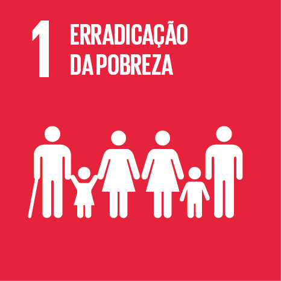
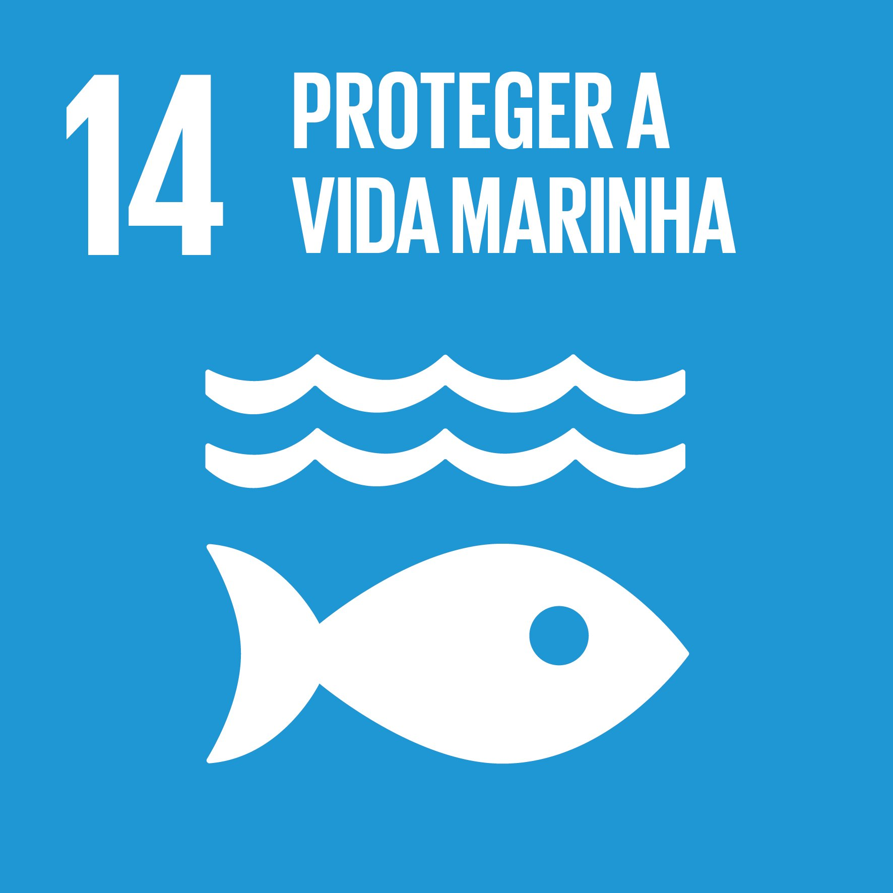

- HOME
- 3 DIMENSÕES
- 17 OBJETIVOS
- DOAR
- TI/ODS
|  |  |
 |
|||
 |
 |
 |
 |
||
 |
 |  |
 |
 |
De acordo com o documento que apresenta e explica o projeto
do
Desenvolvimento Sustentável, temos como objetivos e
principais metas:
-Erradicar a pobreza extrema em todos os extremos do mundo.
-Oferecer serviços, tecnologias e direitos iguais de economia
e proteção para as pessoas mais pobres
-Criar bases de incentivo de estratégias de desenvolvimento
a favor da comunidade mais pobre.
-Acabar com a fome e todas as formas de desnutrição no mundo.
-Oferecer bons alimentos para as pessoas mais necessitadas.
-Dobrar a produtividade agrícola e o ganho dos produtores de
alimentos.
-Adotar métodos para melhorar o funcionamento dos mercados
de Commodities.
-Reduzir a taxa de mortalidade de bebês e as mortes de crianças
menores de 5 anos.
-Acabar com doenças negligenciadas (como AIDS, Tuberculose e
Malária) e qualquer outra que afete gravemente a saúde de crianças.
-Reduzir pela metade as estatísticas globais de acidentes em estradas.
-Oferecer o acesso de serviços de saúde sexual, reprodutiva e
essencial (vacinas e medicamentos eficazes) para toda a população.
-Fazer com que todas as crianças concluam, no mínimo, o ensino primário
e fundamental no ambiente escolar.
-Manter um nível de igualdade de acesso à estudos técnicos e
profissionalizantes para toda a população adulta.
-Acabar com a desigualdade de gênero na área e oferecer acesso à todos
os tipos de educação para a população (principalmente de pessoas "menos
reconhecidas" na sociedade como indígenas, deficientes e crianças em
estado vulnerável).
-Garantir a alfabetização e conhecimento básico de matemática para todos
os jovens e maioria da população adulta.
-Extinguir todas as formas de violência, discriminação e práticas
nocivas (como casamentos forçados) contra meninas e mulheres.
-Aumentar a igualdade de propostas, reconhecimento e presença das
mulheres nas áreas política, pública e econômica.
-Aumentar o uso das tecnologias de informação e comunicação para
incentivar o empoderamento feminino.
-Criar e promover novas políticas e legislações para propagar a
igualdade de gênero.
-Extinguir todas as formas de violência, discriminação e práticas
nocivas (como casamentos forçados) contra meninas e mulheres.
-Aumentar a igualdade de propostas, reconhecimento e presença das
mulheres nas áreas política, pública e econômica.
-Aumentar o uso das tecnologias de informação e comunicação para
incentivar o empoderamento feminino.
-Criar e promover novas políticas e legislações para propagar a
igualdade de gênero.
-Garantir o acesso seguro, e com bons preços, de todos os serviços
de energia.
-Dobrar a taxa de melhora da eficácia energética.
-Facilitar o acesso à pesquisas sobre energias limpas, renováveis
e sustentáveis.
-Expandir e modernizar o fornecimento de serviços de energias
sustentáveis para todos os países em desenvolvimento.
-Garantir o acesso seguro, e com bons preços, de todos os serviços
de energia.
-Dobrar a taxa de melhora da eficácia energética.
-Facilitar o acesso à pesquisas sobre energias limpas, renováveis
e sustentáveis.
-Expandir e modernizar o fornecimento de serviços de energias
sustentáveis para todos os países em desenvolvimento.
-Desenvolver uma Infraestrutura de qualidade sustentável e de
confiança para o grande público, sempre focando no acesso
equitativo e no ajuste de preços para tornar o acesso mais
fácil para todos.
-Reformular as indústrias para algo mais inclusivo e sustentável,
além de aumentar a presença delas no PIB e na área de trabalho.
-Facilitar o acesso das pequenas indústrias e empresas aos
serviços financeiros.
-Aumentar o acesso às tecnologias de informação e comunicação
e tornar a internet acessível para toda a população global.
-Promover a participação social, política e econômica de todos os
cidadãos, independentemente da idade, gênero, etc.
-Aumentar a igualdade por meio da criação de políticas salariais,
fiscais e de proteção social.
-Incentivar uma maior participação dos países em desenvolvimento
nas instituições econômicas financeiras globais.
-Facilitar o processo da migração e da mobilidade ordenada criando
novas políticas bem planejadas.
-Garantir uma boa e adequada moradia e acesso a serviços básicos
para toda população.
-Proporcionar o acesso de todos aos transportes seguros aumentando
a segurança e desenvolvimento das locomoções públicas.
-Fortalecer novos esforços e políticas para preservar os patrimônios
culturais e naturais.
-Reduzir o impacto negativo per capita das cidades, reforçando a
revisão de fatores como a qualidade do ar e gestão de resíduos municipais.
-Reduzir pela metade as escalas mundiais de desperdícios e perdas de
alimentos pós produção e colheita.
-Reduzir a geração de resíduos usando as técnicas de prevenção, redução,
reciclagem e reuso.
-Incentivar, principalmente as empresas grandes e internacionais, a
adotarem práticas sustentáveis em seu desenvolvimento e conter dicas ou
informações sobre o assunto em seus relatórios.
-Garantir que as pessoas de todos os lugares possíveis tenham acesso
a informações sobre a conscientização e estilos de vida do desenvolvimento
sustentável.
-Garantir uma boa e adequada moradia e acesso a serviços básicos
para toda população.
-Proporcionar o acesso de todos aos transportes seguros aumentando
a segurança e desenvolvimento das locomoções públicas.
-Fortalecer novos esforços e políticas para preservar os patrimônios
culturais e naturais.
-Reduzir o impacto negativo per capita das cidades, reforçando a
revisão de fatores como a qualidade do ar e gestão de resíduos municipais.
-Reforçar a adaptação a possíveis catástrofes naturais e mudanças
drásticas do clima.
-Aumentar a conscientização da capacidade humana de adaptação, redução
de impacto e mudança do clima.
-Integrar medidas de mudança do clima nas políticas, estratégias e
planejamento dos países.
-Promover elementos para a criação de projetos relacionados à mudança
do clima e sua eficácia.
-Prevenir e reduzir todo tipo de poluição marinha, principalmente
aquelas vindas de atividades terrestres.
-Proteger os Ecossistemas marinhos de forma sustentável para evitar
grandes impactos significativos.
-Incentivar a coleta de resíduos dos ambientes aquáticos e acabar
com todo tipo de atividade ilegal de pesca e suas técnicas destrutivas.
-Proporcionar o acesso ao mercado e de recursos naturais aos pescadores
artesanais de pequena escala.
-Propagar ainda mais a conservação, recuperação e uso sustentável dos
ecossistemas marinhos e terrestres.
-Promover a Sustentabilidade em todos os tipos de florestas, acabar com
o desmatamento e aumentar os níveis de florestamento e reflorestamento
no mundo.
-Adotar e criar novas políticas para reduzir as estatísticas de degradação
dos habitats naturais, extinção de espécies ameaçadas e perda da
Biodiversidade.
-Reforçar o apoio global para combater e acabar com todo o tipo de caça
ilegal e tráfico de animais.
-Adotar e implementar regimes de promoção de investimento para países
subdesenvolvidos.
-Melhorar o acesso à ciência, tecnologia e inovação e aumentar a divulgação
e compartilhamento de novos conhecimentos e descobertas.
-Criar um novo sistema de comércio aberto e não discriminatório e com a
implementação de novas regras.
-Aumentar a estabilidade da Macroeconomia e a coerência das políticas de
desenvolvimento sustentável.